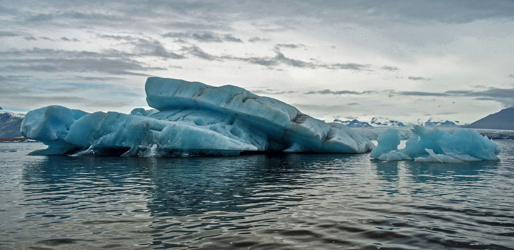
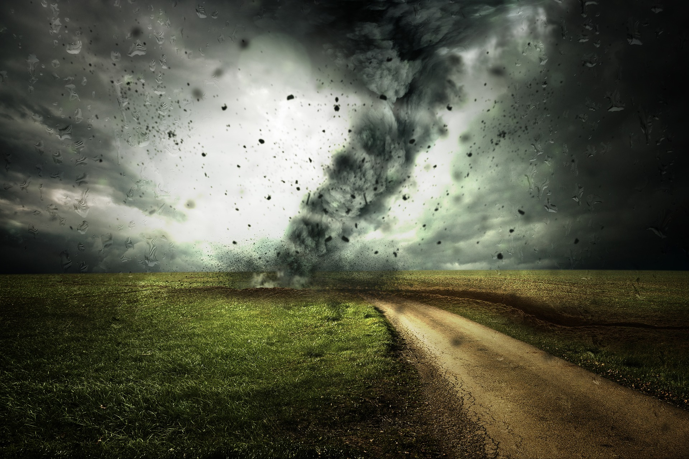

Consequências
Veja quais serão as consequências das mudanças climáticas

O derretimento do gelo provocará mudanças significativas nos oceanos

Vão se tornar mais frequentes os furacões e tornados fortes, tempestades, inundações, deslizamentos de solos em encostas, secas prolongadas, superaquecimento em algumas localidades e períodos.

Algumas doenças podem proliferar nas próximas décadas, pois o aumento das chuvas e das temperaturas favorece os agentes e vetores de doenças infecciosas endêmicas.